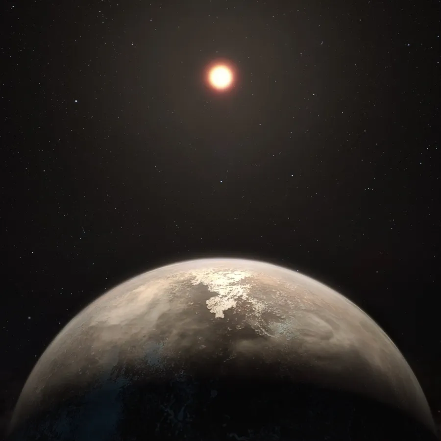

15. November 2017
Ross 128 b: gemäßigter Planet in nur 11 Lichtjahren Entfernung
Mit dem Spektrografen HARPS der ESO wurde ein Planet von etwa Erdmasse beim Roten Zwerg Ross 128 entdeckt, nur 11 Lichtjahre vom Sonnensystem entfernt. Ross 128 b umrundet den Stern alle 9,9 Tage und war nach Proxima b der zweitnächste bekannte gemäßigte Planet.
Der Planet erhält 1,38-mal so viel Strahlung wie die Erde; seine Gleichgewichtstemperatur wird auf −60 bis 20 Grad Celsius geschätzt. Ob er innerhalb, außerhalb oder am Rand der habitablen Zone liegt, ist unsicher. Ross 128 ist ein besonders ruhiger Roter Zwerg, was die Aussichten auf lebensfreundliche Bedingungen verbessern könnte.
Quelle: ESO: "Closest Temperate World Orbiting Quiet Star Discovered." (eso1736), 15.11.2017